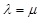
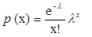

Distribucion poisson:
La distribucion de Poisson se basa en dos supuestos fundamentales, el primero de ellos consiste en que la probabilidad de ocurrencia del evento es constante para dos intervalos cualesquiera
de espacio o tiempo y el segundo, refiere que la ocurrencia del evento en un intervalo es independiente de la ocurrencia de otro intervalo cualquiera (Webster, 2000).
En la distribucion de probabilidad de una variable aleatoria de Poisson X, la cual representa el numero de resultados que ocurren en un intervalo de tiempo dado y region especificos
se denota con t, donde 
es el núumero promedio de resultados por unidad de tiempo,
distancia, area o volumen y e = 2,71828, su funcion de probabilidad viene dada por la siguiente expresion (Levin et. al., 2004; Walpole et. al., 2012).
